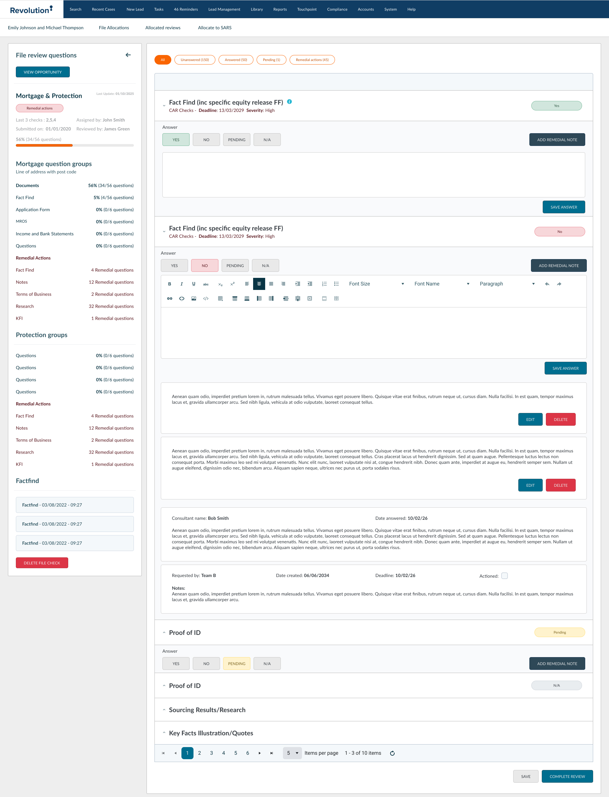
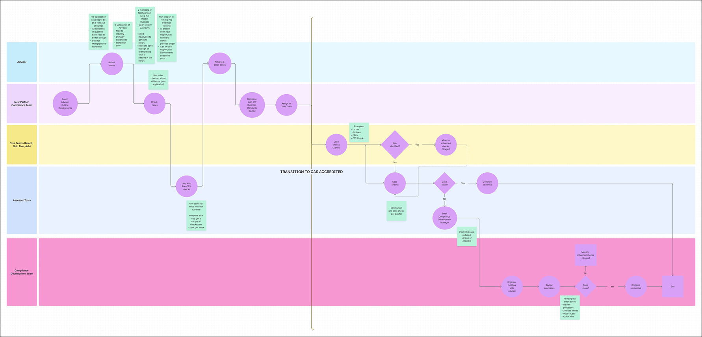
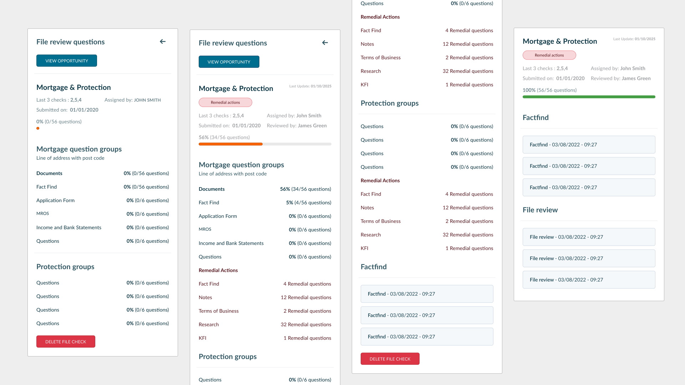
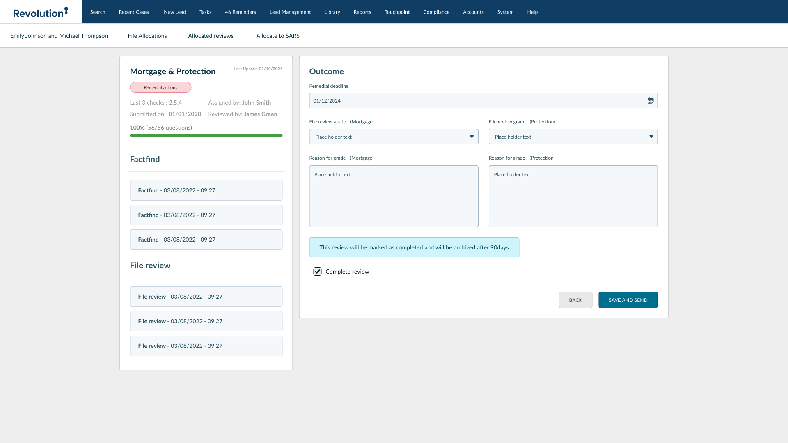

File Review System
Optimisation
Taking the pain out of compliance by redesigning a bloated, 83-question workflow for over 240 file reviewers.
1. The Scale of the Problem
We had a scaling problem. Supporting 1,300+ advisors meant our review teams were drowning in massive, fragile spreadsheets and messy email threads. When a single review requires checking 83 different compliance rules, doing it manually isn't just slow—it's incredibly risky.

2. Visualising the Bottlenecks
Before designing anything, I mapped out exactly how the teams were currently working. The diagram below exposed a huge issue: the process was far too rigid. Every time an advisor handed a file back and forth to a reviewer, it created a massive traffic jam in the system.

Information architecture excerpt
Implementation notes
The eighty-three checkpoints map to hierarchical groups reviewers can traverse without exhausting working memory—a contract you can serialize for engineering.
{
"journey": ["intake", "fact_find", "remedial", "outcome"],
"groups": [
{
"id": "fact_find",
"questions": 35,
"widgets": ["accordion", "persistent_sidebar"]
}
],
"transitions": {
"draft": ["in_review"],
"in_review": ["completed", "returned"],
"returned": ["in_review"]
}
}3. Managing Cognitive Load
With 83 possible questions per file, cognitive overload was a real issue. Cases were taking up to two weeks to close. To fix this, I broke the massive forms into bite-sized chunks using a Collapsible Sidebar Navigation. This allowed reviewers to safely jump between the Fact Find, Remedial Actions, and the final Outcome without losing their place.

4. Fixing Team Visibility
Team Leads were flying blind. We redesigned the dashboard to clearly separate cases that were "Allocated" from the actual "To-Do" backlog. I also brought in color-coded status pills so leads could spot 'At Risk' files instantly instead of digging through rows of text.
5. Defining the Outcome
The final step is the "Outcome" screen. We ripped out the ambiguous text boxes and replaced them with structured data inputs. Now, if a file fails a review, it has a specific, trackable reason attached to it. No more guessing why an advisor was penalized.

Scale
160 Daily Reviewers
Complexity
83 Data Points
Efficiency
+40% Speed
Phase 2: Bringing in AI
Automating the Heavy Lifting
We didn't just want to digitize the process; we wanted to automate the tedious parts. We brought in an AI checker that runs directly inside the assessor's dashboard to replace manual checklist verification.
- → The Trigger: Users hit "Run AI Check" and select the specific policy they want to test.
- → Managing Expectations: Because API calls take time, I designed a multi-state button (Checking → Cancel → Download) so users always know exactly what the system is doing.
Interactive Status Loop Component
The "Sync" Rule
A big challenge was making sure the AI pop-up and the main dashboard were always looking at the same data.
The Fix: I designed a strict synchronization rule: change a filter in the AI tool, and the dashboard updates instantly. Change the dashboard, and the AI updates. No more mismatched data.
Granular Scoring
Historically, files just got a single, blended "Score". We split this up into distinct columns for "Mortgage" and "Protection".
Why it matters: This meant a complex case got an accurate, granular grade rather than a watered-down average, giving reviewers much better insight.
UI Strategy: The "Grouped View"
Adding all these new AI buttons and split-scoring columns meant we were running out of screen real estate. Instead of squishing everything together, we got smart with the layout.
Space-Saving Layout
Instead of repeating an Assessor's name on every single row, I built a "Grouped View" where cases nest cleanly under a collapsible header.
Abbreviated Headers
We brutally optimized column titles (e.g., changing "Case Review Checklist" to just "Checklist") to reclaim valuable horizontal space for the new action buttons.